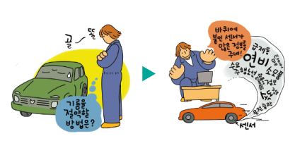
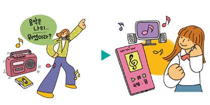
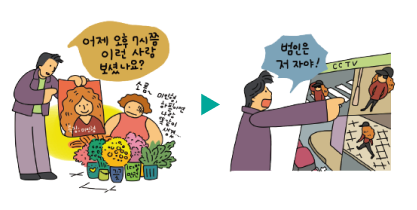

스스로 해결하기
디지털 기술 적용과 변화
디지털 기술이 적용된 사례를 살펴보고, 디지털 기술로 어떤 점이 편리해졌는지 적어 보자.
사례 1

예시
타이어에 부착된 센서로 운전 정보 및 연료 소비 정보를 분석하여 기름을 절약하는 데 사용할 수 있게 되었다.
사례 2

예시
온라인으로 음원을 구매하여 클라우드 저장소에 저장해 두고 여러 기기에서 이어서 들을 수 있게 되었다.
사례 3

예시
도둑을 잡기 위해 목격자를 일일이 찾아다니지 않고 CCTV 영상 분석을 활용하여 도둑의 이동 경로를 분석할 수 있게 되었다.
사례 4
예시
자신이 만든 시나리오를 학습시킨 인공지능으로 새로운 시나리오를 좀 더 수월하게 작업할 수 있게 되었다.
제출하기
다시 제출하기